HIST 270 · History of China · Chapter 1 · Lecture 2
Writing, Bronze, and the Wider World
Words on Bone, Bronze for the Ancestors, and a Bronze Age Bigger Than the Shang
ca. 1200–1000 BCE · Writing · Bronze · The wider world Background essay ↗
Course title card from the SU26 deck: photographs of the YH127 oracle-bone pit (Xuan Che, CC BY 2.0) and a Met Shang fangding (public domain), cropped and typeset.
The puzzle · Anyang, 1939
Villagers Dug Up a Bronze Cauldron So Heavy That Hiding It Took Courage
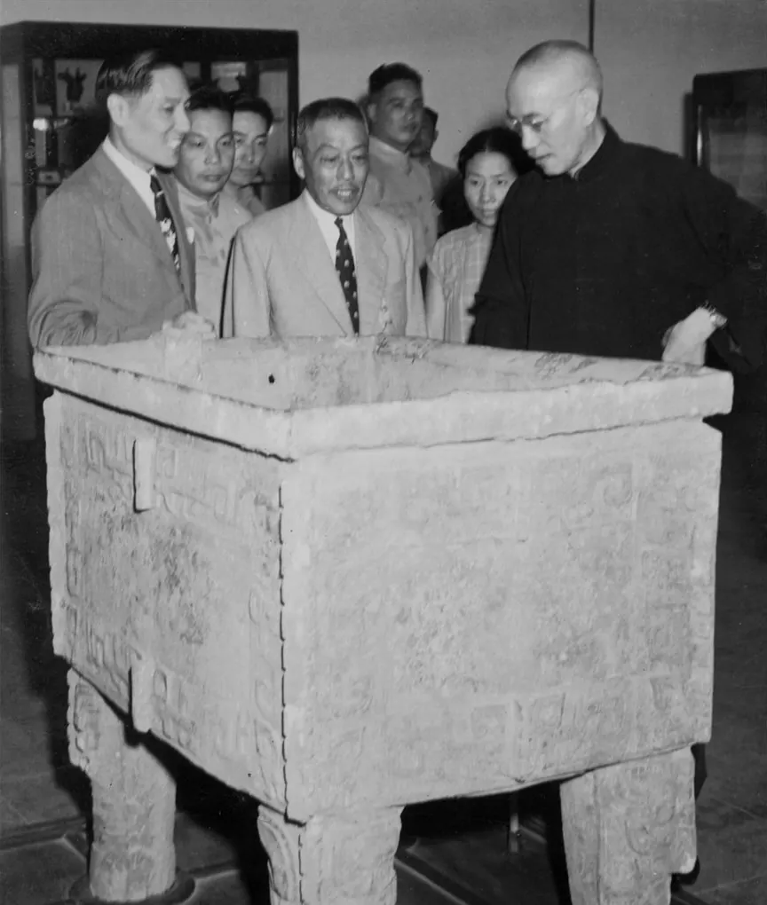
The cauldron on display in Nanjing, 1948, with Chiang Kai-shek (right). Photographer unknown; public domain, Wikimedia Commons.
1939. Villagers near Anyang dig up a giant bronze cauldron at night.
Hidden. They rebury it to keep it from Japanese occupying troops.
1946. Dug up again, it becomes a national treasure.
The questions. Who could make such a thing, and what do its words say?
×
Houmuwu or Simuwu?
The three characters cast inside the cauldron name a royal mother called Wu. Scholars disagree whether the first character means “queen” (hou) or “to sacrifice to” (si), so the vessel is also called the Simuwu ding.
Sources: Ebrey, Ch. 1, p. 14; the 1939 discovery story is from People’s Daily (2015) (outside the textbook).
How to use this deck
Shang Scribes Carved Their Records into Bone; These Five Tools Help You Read This Deck
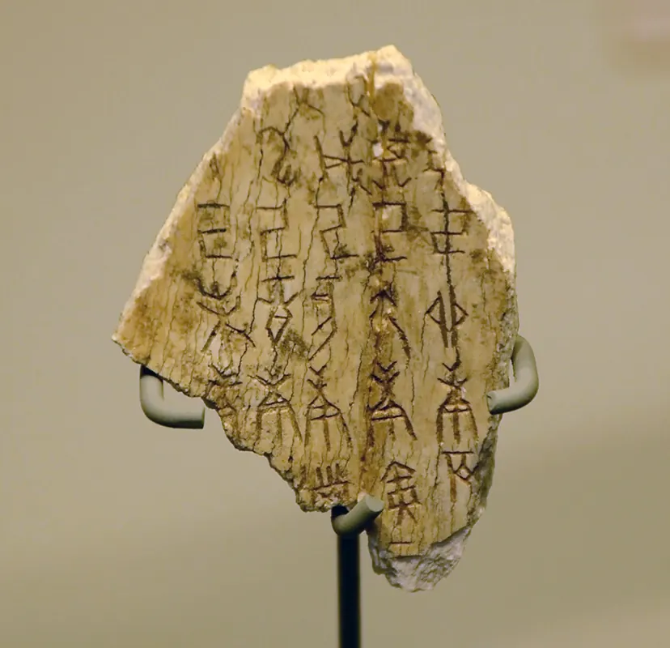
Inscribed ox-bone fragment from Anyang, about 1200 BCE. Musée royal de Mariemont, Belgium. Photo: Vassil, CC0, Wikimedia Commons.
Press S to open the Study Buddy notes for each slide.
Click any image, or press Enter on it, to see it full size.
Click a teal dotted word for a quick definition.
Answer each Reading Guide checkpoint, then open the guide.
Use the arrow keys to move, and Esc for a slide map.
×
Scribe
A scribe is a trained writer who keeps records for a ruler or temple. Shang scribes carved the king’s questions to his ancestors, and sometimes the results, into bone and shell.
Popups like this one close with Esc, the × mark, or a click outside the card.
Roadmap · Three acts, one question
Three Acts Ask One Question: How Did Skill Become Power in Bronze Age China?
I
Writing as Power
What scribes recorded and why literacy helped kings rule. Checkpoints: Q5, Q6.
II
Bronze for the Ancestors
How hundreds of workers cast vessels for ritual, not war. Checkpoint: Q7.
III
A Wider Bronze Age
Sanxingdui and other centers the Shang did not control. Checkpoint: Q8.
The thread: writing and bronze turned rare skills into authority, but the Shang were not alone.
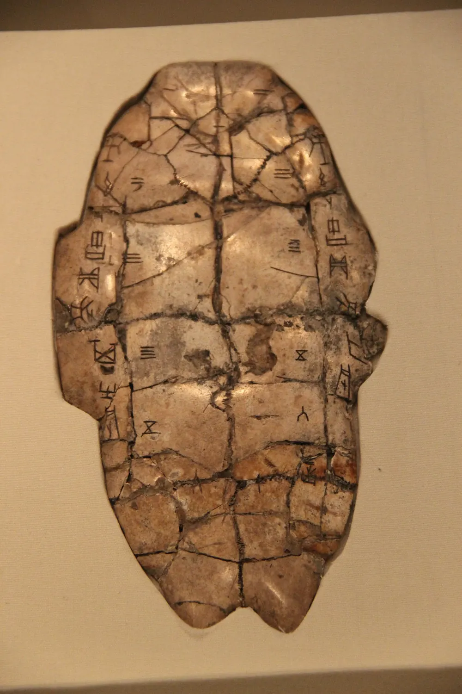
Act I · ca. 1200 BCE · Anyang
Writing as Power
What the king's scribes wrote down, and why it mattered.
Inscribed turtle plastron from the reign of King Wu Ding, Anyang. National Museum of China. Photo: Gary Todd, CC0, via Wikimedia Commons.
Q5 story · The king's records
The Same Bones That Questioned the Ancestors Also Kept the King's Accounts
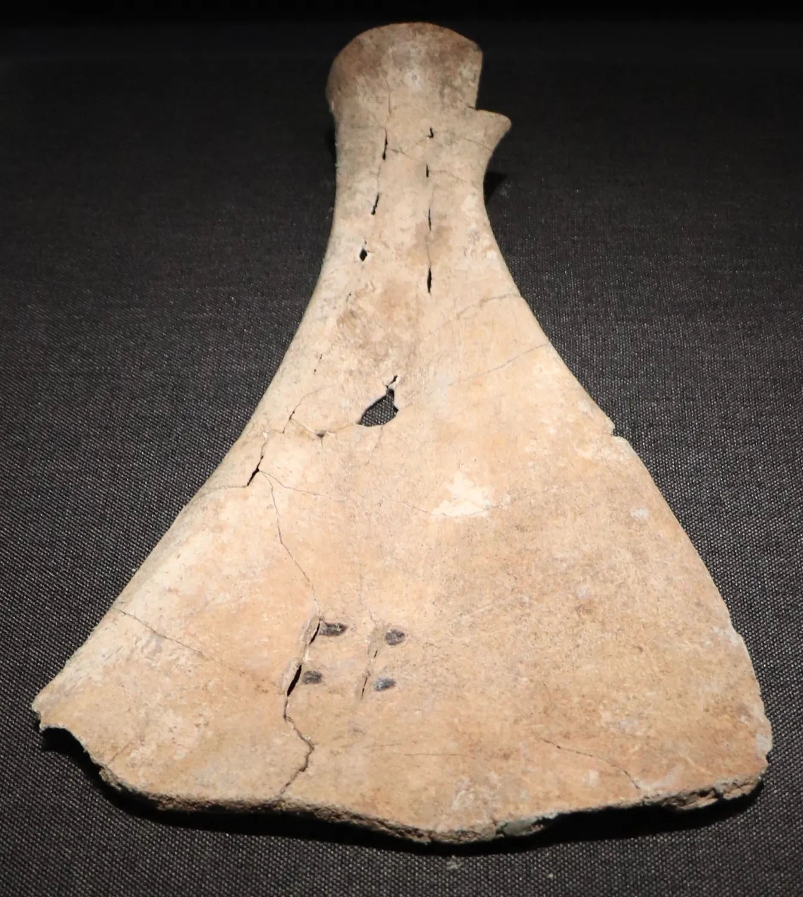
Inscribed oracle bone from Xiaotun, Anyang, Shang dynasty. Photo: Furius, CC0, Wikimedia Commons.
By 1200 BCE. Writing was already a major part of Shang court life.
War. Scribes recorded enemies slain and booty taken.
Hunts and tribute. They logged animals bagged and payments received.
People. The records even name Lady Hao leading 13,000 troops.
Scribes Dated Every Record with a Sixty-Day Cycle That Lasted Three Thousand Years
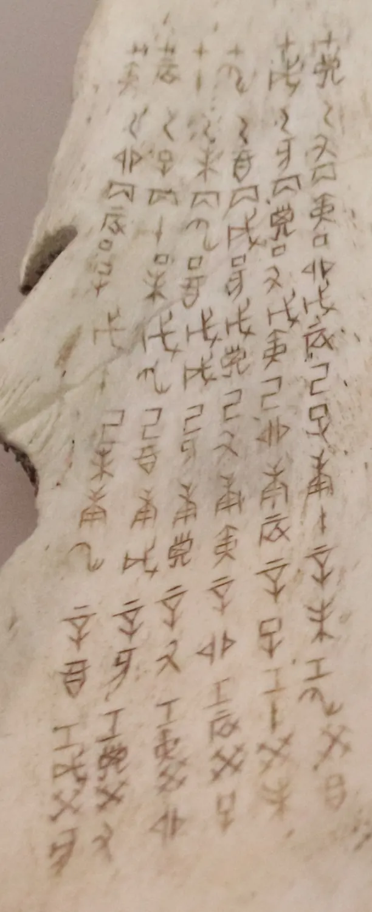
Ox scapula carved with the full sixty-day cycle (Heji 37986), late Shang, Anyang. Photo: Kanguole (crop), CC0, Wikimedia Commons.
Lunar months. The year was divided by the phases of the moon.
Ten-day weeks. Ten “day signs” repeated, like our seven weekdays.
Sixty-day cycle. Paired signs gave every day its own name.
Why it matters. Records can be compared only if everyone dates them alike.
×
Ten-day and sixty-day cycles
The Shang named days with two sets of signs: ten “heavenly stems” and twelve “earthly branches.” Pairing them in order gives sixty unique day names before the pattern repeats.
Versions of this cycle ran continuously through the rest of Chinese history, and it is still used for the traditional calendar today.
Q5 story · The writing we lost
Writing Is Older Than the Bones, but the Earliest Books Rotted Away
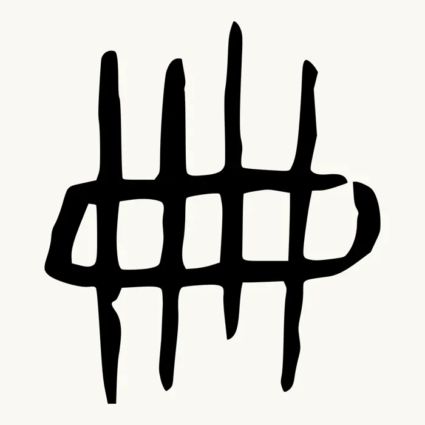
The Shang graph 冊 (ce, “book”): bamboo strips bound with cord. Vector drawing after oracle-bone forms, public domain, Wikimedia Commons.
Mature by 1200 BCE. The oracle-bone script was already a full writing system.
Earlier roots. Writing must have been invented before the surviving bones.
Perishable. Daily writing likely used bamboo, wood or silk.
A clue. The Shang graph for “book” pictures tied bamboo strips.
About 5,000 graphs. Only about 40 percent have been deciphered.
Q5 story · Writing and control
Literacy Was an Ally of Political Control Across an Expanding Realm
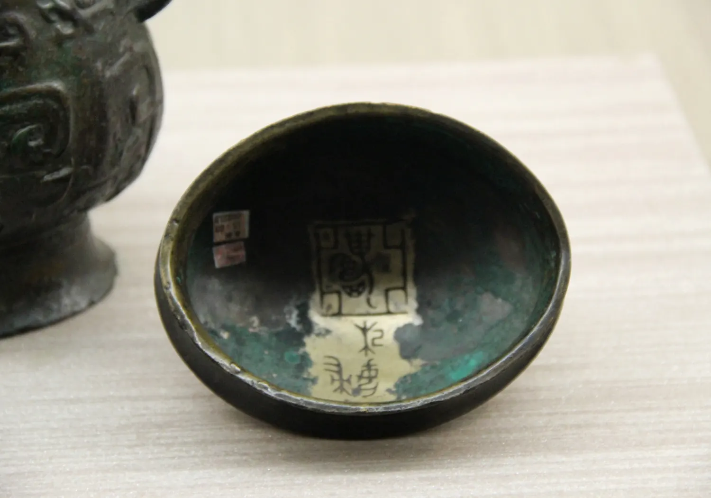
Cast inscription inside the lid of a bronze you wine vessel, late Shang to early Western Zhou, 11th century BCE. Photo: Gary Todd, CC0, via Wikimedia Commons.
Distance. Written orders carried the king’s words where he could not go.
Counting. Records made tribute, campaigns and labor countable, and collectable.
Restricted. Years of training kept literacy in elite hands.
Permanent. Words cast in bronze announced claims meant to last forever.
Takeaway: like divination, writing gave the king an advantage few could share.
Reading Guide · Review Question 5
Reading Guide · Review Question 5
Review Question 5
What does the development of writing during the Shang Dynasty reveal about government administration, communication, and political control?
Concept: A Logographic Script Uses Characters That Stand for Whole Words
Concept
Logographic script
A writing system in which each character stands for a word, not a sound. Chinese is the great surviving example; most of the world now writes with phonetic scripts.
Phonetic. Symbols stand for sounds; two dozen letters can spell any word.
Logographic. Each character stands for a whole word, with its meaning.
Same family. Early Egyptian and Sumerian writing worked this way too.
Key effect. Readers grasp meaning without sharing the same pronunciation.
Sources: Ebrey, Ch. 1, p. 13.
Q6 story · How characters work
Chinese Characters Stand for Words, Not Sounds, and Most Combine Meaning and Sound
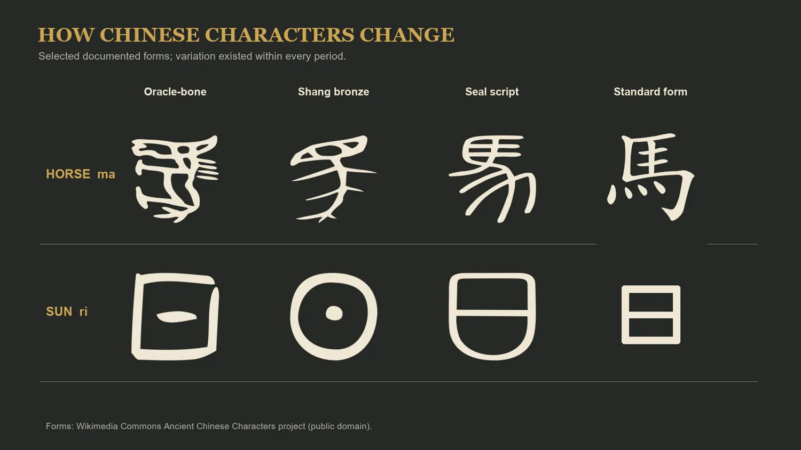
Course-made chart: “horse” and “sun” from oracle-bone forms to modern standard script, drawn from public-domain Ancient Chinese Characters files on Wikimedia Commons.
Logographic. Each character stands for a whole word.
Pictures. Some characters began as drawings, like horse and sun.
Borrowing. Some graphs were borrowed for words that sounded alike.
Combining. Over half of oracle-bone graphs join a meaning part and a sound part.
The cost. Basic literacy needs two to three thousand characters.
×
Logographic vs. phonetic scripts
In a phonetic script, like the English alphabet, symbols stand for sounds, and about two dozen letters can spell any word.
In a logographic script, each character stands for a whole word. Chinese is the great surviving example, similar in principle to ancient Egyptian hieroglyphs and Sumerian cuneiform. It takes longer to learn, but a reader can understand a character without knowing how someone else pronounces it.
Q6 story · One script, many tongues
One Script Held China Together Across Different Dialects and Many Centuries
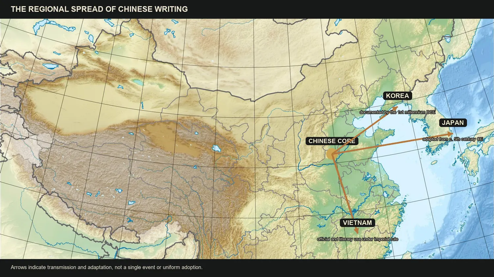
Course-made teaching map of the spread of Chinese writing. Base map: Uwe Dedering, CC BY-SA 3.0; arrows are broad and schematic.
Across space. Speakers of different dialects could read the same texts.
Across time. Readers could still understand writing from centuries earlier.
Kept, not replaced. Western Eurasia switched to phonetic scripts; China never did.
Beyond China. Korea, Japan and Vietnam all began writing with Chinese characters.
Cost and benefit: years of study for a few; one written language for all readers.
Reading Guide · Review Question 6
Reading Guide · Review Question 6
Review Question 6
What is a logographic writing system, and why did the continued use of Chinese characters contribute to political and cultural unity over time?
An industry before industry, poured into ritual instead of war.
Shang casting equipment and clay moulds, On-Site Museum, Yin Ruins, Anyang. Photo: Gary Todd, CC0, via Wikimedia Commons.
Q7 story · An industry before industry
It Took Two to Three Hundred Craftsmen to Make the Largest Shang Bronze
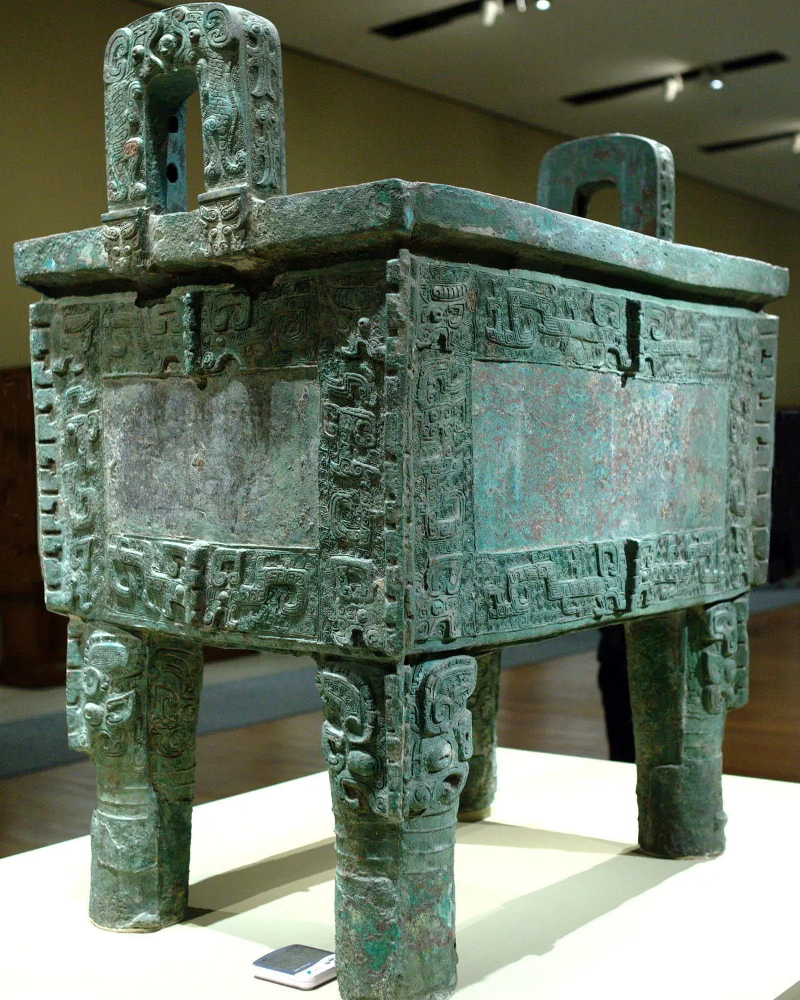
The Houmuwu ding, about 1200 BCE, National Museum of China. Height 133 cm. Photo: Mlogic, CC BY-SA 3.0, via Wikimedia Commons.
200–300
craftsmen for one vessel
about 830 kg
museum weight; your textbook says 875 kg
The vessel. The cauldron from the opening story: the largest Shang bronze.
The workforce. Hundreds of specialists had to work as one team.
The point. One object reveals a whole organized society.
Q7 story · How a bronze was cast
Shang Artisans Cast Bronze in Clay Piece-Molds, Step by Careful Step
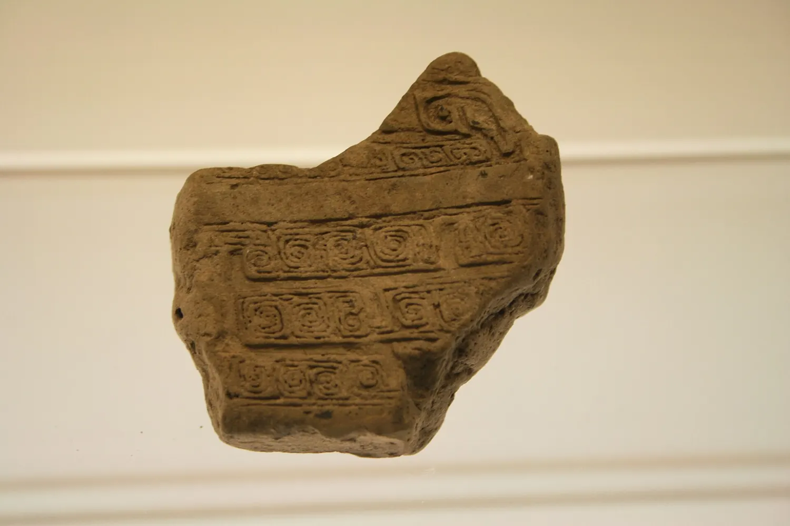
Fragment of a late Shang clay mould from the Yinxu foundry site, Anyang. Shanghai Museum. Photo: Gary Todd, CC0, Wikimedia Commons.
Shape a clay model of the finished vessel.
Press clay around it to make mold sections; carve the decoration.
Fire the piece-mold sections, then fit them around a clay core.
Pour molten bronze into the gap and let it harden.
Break away the mold, then finish and polish the vessel.
×
Piece-mold casting
In piece-mold casting, a vessel is cast inside a mold made of separate fired-clay sections fitted together around a core.
Because the decoration was carved into the mold sections, every line had to be planned before the metal was poured. The method rewarded precision and specialization.
Q7 story · From mine to workshop
Every Bronze Began Far Away, with Miners, Charcoal Burners and Porters
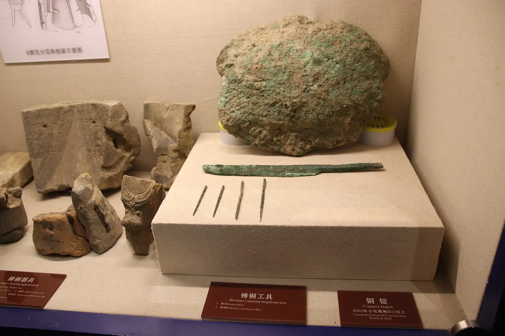
Copper ingot, casting tools and mould fragments from the Yin Ruins. On-Site Museum, Anyang. Photo: Gary Todd, CC0, Wikimedia Commons.
Ores. Copper, tin and lead were mined and refined, often far from Anyang.
Fuel. Charcoal had to be made and hauled to the furnaces.
Transport. Ore, metal and fuel moved along long supply routes.
Workshops. City workshops specialized: hairpins, arrowheads, ritual vessels.
Managers. Someone had to plan and oversee the whole chain.
Q7 story · Bronzes with names
The Greatest Shang Bronzes Carried the Names of Powerful Royal Women
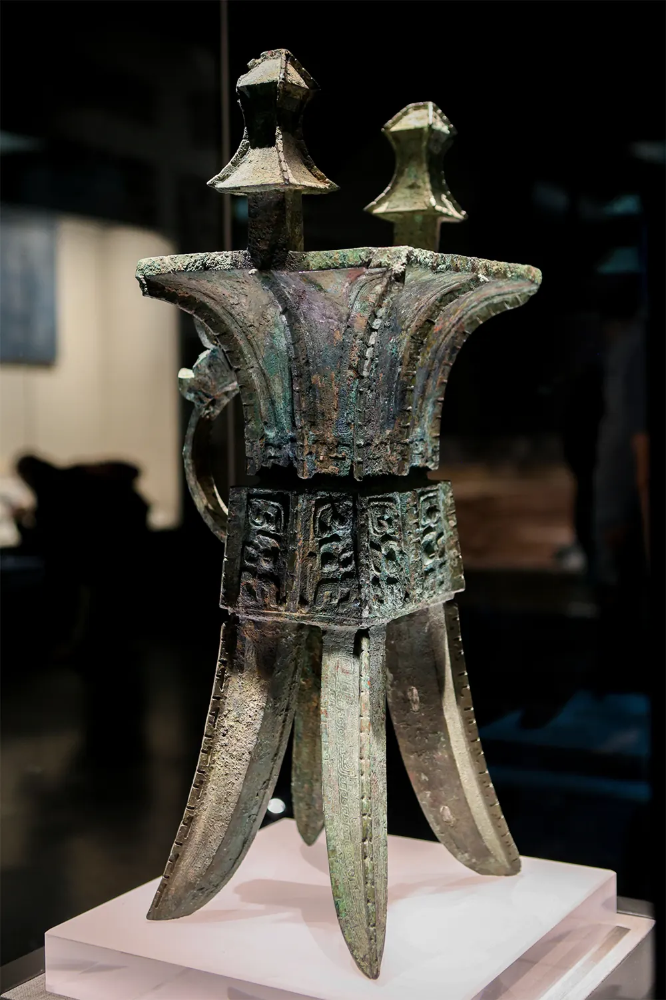
Rectangular jia wine vessel inscribed with Lady Hao’s name, from her tomb at Anyang. Henan Museum. Photo: Windmemories, CC BY-SA 4.0, Wikimedia Commons.
Kings and nobles. Both owned bronze vessels, but kings owned many more.
Lady Hao. About 60 vessels in her tomb bear her name · recap: Lecture 1
Queen Mother Wu. The giant cauldron honors a royal mother, probably Wu Ding’s queen.
Writing meets bronze. Short cast inscriptions named the owner or the honored ancestor.
Q7 story · Ritual, not war
The Shang Poured More Bronze into Feeding the Ancestors Than into Weapons
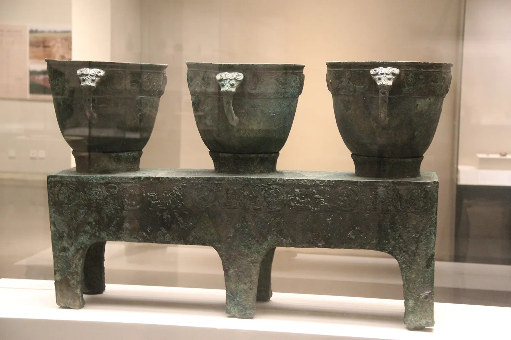
Triple yan steamer from Lady Hao’s tomb, Anyang, reign of Wu Ding. National Museum of China. Photo: Gary Todd, CC0, Wikimedia Commons.
Mostly vessels. Most surviving Shang bronzes are cups, goblets, steamers and cauldrons.
Food and wine. Offerings for ancestors and gods · recap: Lecture 1
A choice. A warlike state still spent its precious metal on ritual.
Rank on display. More vessels meant more access to the sacred.
Q7 story · The face no one can explain
Wild Animals Cover Shang Bronzes, and Scholars Still Argue About What They Mean
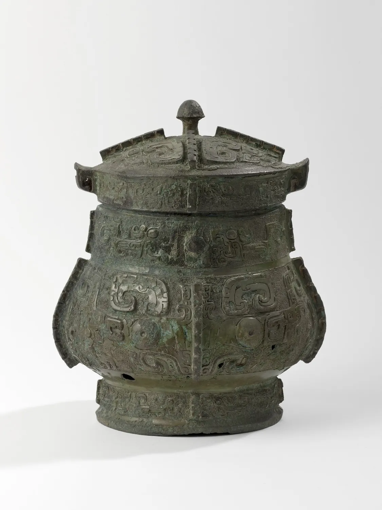
Bronze you wine jar with taotie faces on body and lid, about 1300–1050 BCE. Musée Cernuschi, Paris. Public domain (CC0), Wikimedia Commons.
Wild, not farm. Shang art favors wild animals, not crops, kings or slaves.
Cicadas. Insects reborn from the earth may suggest rebirth among ancestors.
Birds. They may stand for messengers to realms in the sky.
Taotie. A monster, a mask, a sacrifice symbol, or just design?
×
Taotie (饕餮)
The taotie is the stylized, symmetrical animal face that dominates Shang bronze decoration, with two staring eyes, horns and curling jaws.
Scholars do not agree on its meaning. Some see a monster that scared away evil, some a ritual mask, others a sign of animal sacrifice, totemism or shamanism, and some think it was hardly more than a design.
Reading Guide · Review Question 7
Reading Guide · Review Question 7
Review Question 7
How did Shang bronze production demonstrate advanced social organization, and what do bronze vessels reveal about Shang beliefs and culture?
The Shang thought they were the center. Archaeology found other centers.
AI-generated interpretation, not a historical source. Carried over from an earlier version of this lecture.
Q8 story · Beyond the king's reach
Shang Kings Ruled a Small Core, but Their Bronze Technology Traveled Far
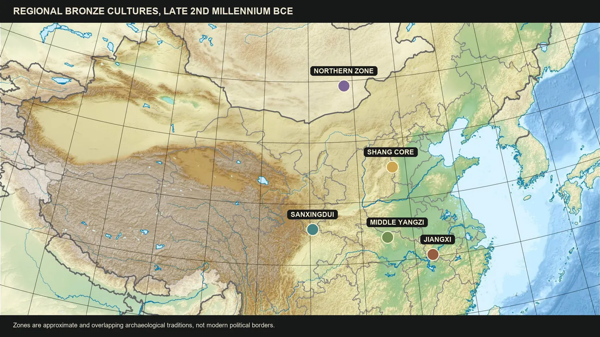
Course-made teaching map of Bronze Age regional cultures. Base map: Uwe Dedering, CC BY-SA 3.0. Zones are approximate, not borders.
Constant war. The Shang fought rival groups, tribes and states on every side.
A small core. The king could travel safely only in northern Henan and western Shandong.
Spreading skills. Bronze technology spread far beyond the lands the Shang controlled.
The question. Were other bronze users Shang subjects, or something else?
Q8 story · The middle Yangzi
In the Middle Yangzi, Shang Technology Served Local Tastes, Even Human Faces
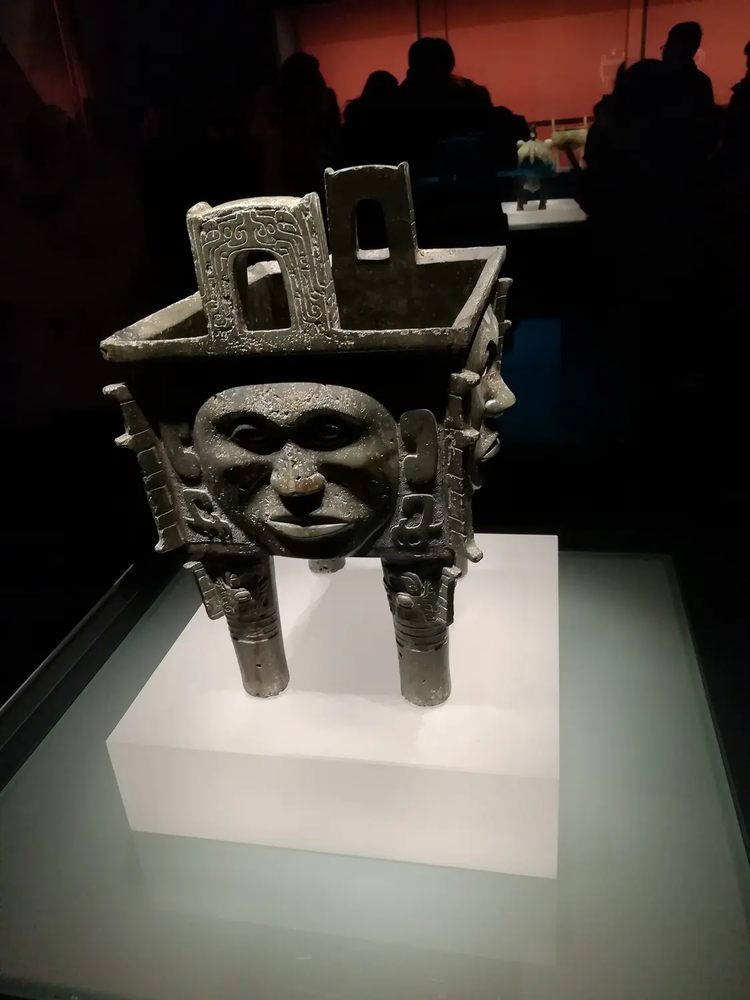
Square ding with human faces, from Ningxiang, Hunan, late Shang period. Hunan Museum. Photo: Huangdan2060, CC0, Wikimedia Commons.
Same technology. Middle Yangzi bronzes were cast with Shang methods.
Different design. Some show human faces where the Shang put a taotie.
Bells. Large bronze bells are common, some buried in mountainsides.
No writing. We cannot tell what language these people spoke.
Q8 story · The tombs of Jiangxi
Elites in Jiangxi Gathered Wealth on a Scale to Rival the Shang
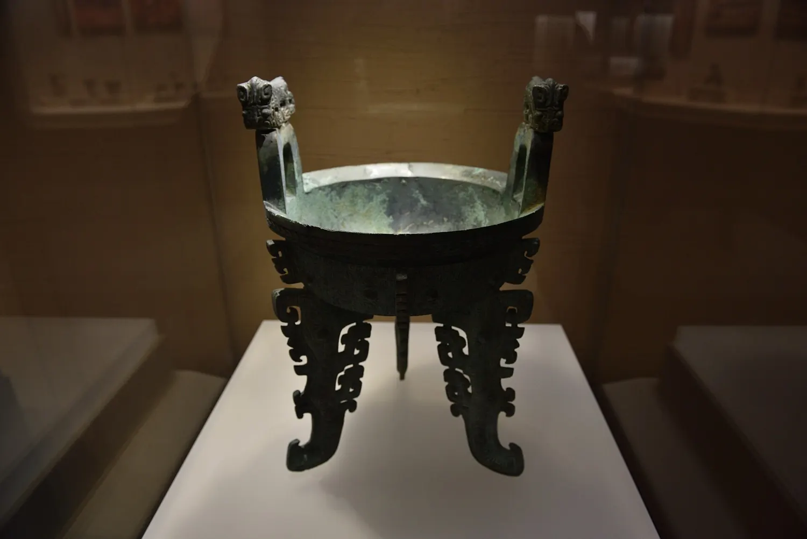
Bronze ding with tigers on its handles, from the Dayangzhou tomb at Xin’gan, Jiangxi, about 1200 BCE. Jiangxi Provincial Museum. Photo: Siyuwj, CC BY-SA 4.0, Wikimedia Commons.
Rich tombs. Jiangxi elites amassed wealth on a scale like Shang elites.
Tigers. Tigers on vessel handles were a local signature style.
Province or rival? Scholars still debate: provincial Shang, or a separate culture?
Silent evidence. Without writing, the debate cannot be settled.
Q8 story · The northern frontier
North of the Shang, a Bronze Culture Looked Toward the Steppe
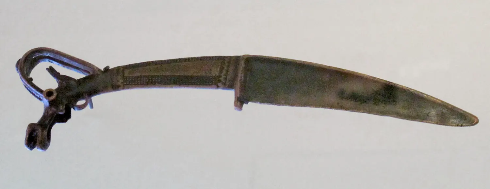
Bronze knife with an ibex-head handle, 13th–11th century BCE, a style linked to the northern frontier. British Museum. Photo: Ismoon, CC BY-SA 4.0, Wikimedia Commons.
Farmers and herders. They grew millet and raised pigs, sheep and cattle.
Steppe-style bronze. Knives, axes and mirrors resemble Central Asian and Siberian work.
A Shang link. They also practiced oracle-bone divination.
Chariots? They may be the people who brought chariots to the Shang.
At Anyang. Lady Hao’s tomb held Northern Zone knives and mirrors.
Q8 story · Sanxingdui, 1986
In 1986, Two Pits in Sichuan Revealed a Civilization Nobody Expected
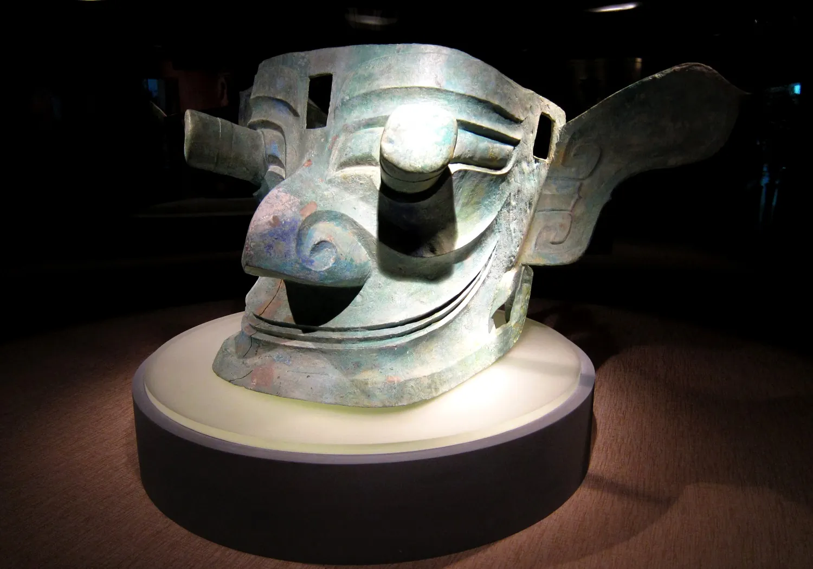
Bronze mask with protruding eyes, Sanxingdui Pit 2, about 1200–1100 BCE. Sanxingdui Museum. Photo: momo, CC BY 2.0, via Wikimedia Commons.
Far west. Sanxingdui lies in Sichuan, far from any Shang territory.
Shang date. The two pits date to the time of the Shang.
Never seen before. They held objects never found at any Shang site.
Huge masks. Giant bronze masks and heads, some covered in gold foil.
Q8 story · What the pits held
Burned, Broken and Buried in Layers: A Sacrifice Without Human Victims?
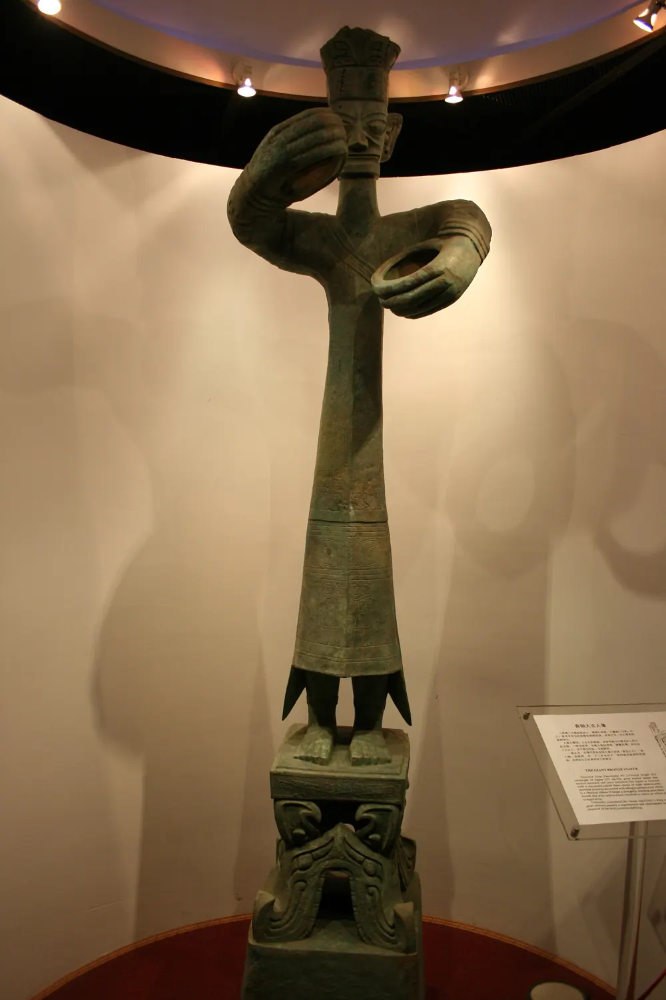
Bronze standing figure, about 2.6 m tall with its base, Sanxingdui Pit 2. Sanxingdui Museum. Photo: Gary Todd, CC0, Wikimedia Commons.
Layers. Small objects first, then large ones, tusks, then rammed earth.
Destroyed on purpose. Many objects were burned or deliberately broken first.
No human victims. Unlike big Shang sacrifices, no people were killed.
Stand-ins? Bronze humans may have replaced human victims.
Gods or ancestors? The heads may have topped wooden or clay statues.
Pit 2: 67 elephant tusks, 20 bronze masks, 40 bronze heads, a bronze statue, bronze trees, 4,600 cowrie shells, almost 500 small beads or tubes of jade, stone or ivory, burned animal bones.
Q8 story · A city that vanished
The Pits Lay Inside a Great Walled City That Was Abandoned Around 1000 BCE
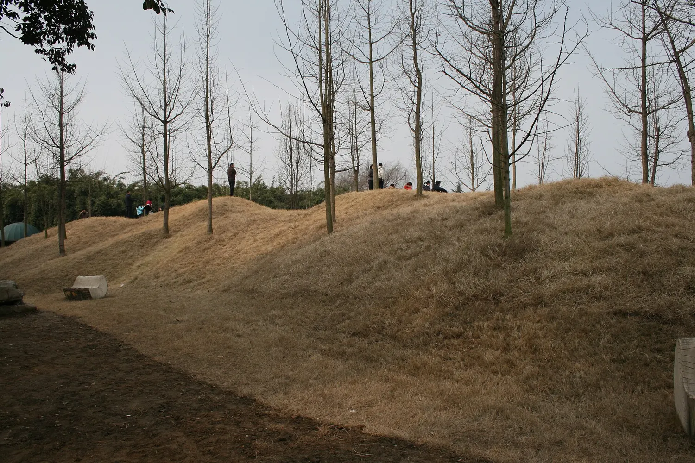
Surviving section of the Shang-era earthen city wall at Sanxingdui, Sichuan. Photo: Gary Todd, CC0, Wikimedia Commons.
A big city. The walls enclosed an area nearly 2 kilometers square.
Buildings. Foundations of about fifty buildings, some rectangular, some round.
Abandoned. Around 1000 BCE, perhaps after flooding, the city was left.
No writing. Its people left no texts to tell their own story.
Early China Was a Landscape of Centers; the Shang Simply Left Us Writing
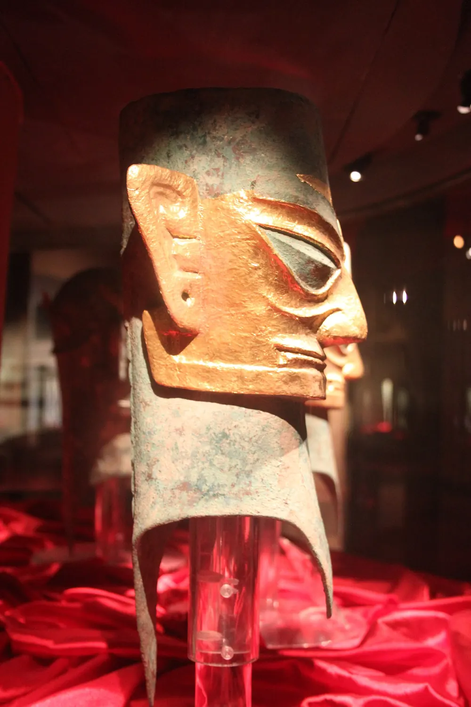
Bronze head with a gold-foil mask, Sanxingdui, about 1200–1100 BCE. Sanxingdui Museum. Photo: Gary Todd, CC0, Wikimedia Commons.
Forced rethinking. Sanxingdui made archaeologists reconsider the Shang-era political map.
Self-centered Shang. Shang rulers wanted their kingdom seen as the central one.
Others too. Elites elsewhere likely saw themselves as central too.
Uneven evidence. The Shang look central partly because their writing survived.
Reading Guide · Review Question 8
Reading Guide · Review Question 8
Review Question 8
How do the archaeological discoveries at Sanxingdui and other regions outside the Shang core challenge the traditional view that the Shang Dynasty was the sole center of early Chinese civilization?
Lady Hao’s Tomb Ties Together Writing, Bronze and the Wider World
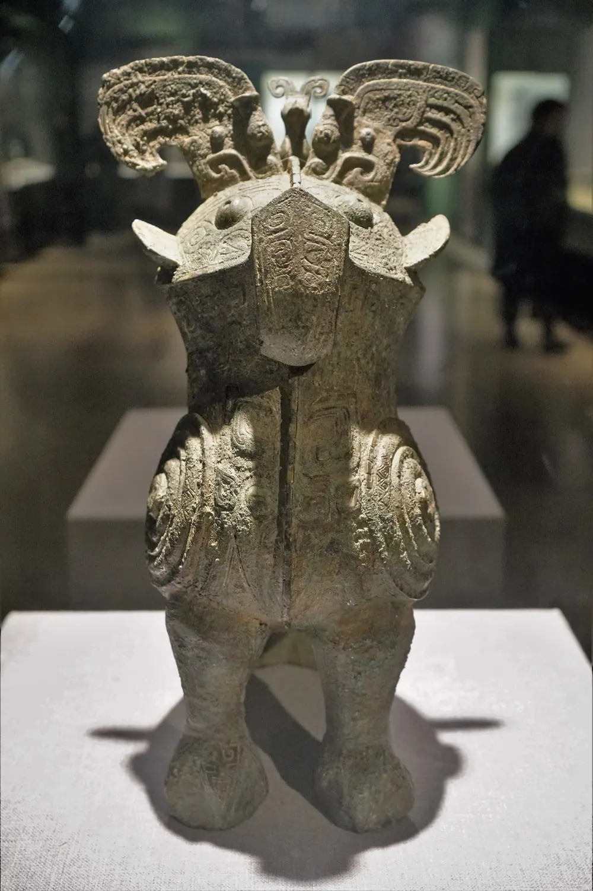
Owl-shaped zun wine vessel inscribed with Lady Hao’s name, from her tomb. Henan Museum. Photo: Cangminzho, CC BY-SA 4.0, Wikimedia Commons.
Writing
Her name is cast on about 60 vessels and recorded on oracle bones.
Bronze
Her bronzes weigh 1.6 tons, the work of a whole industry.
Wider world
Southern vessels and northern knives arrived as tribute.
Coming next · Lecture 3
In 1045 BCE a Western Neighbor Destroyed the Shang and Recorded It in Bronze
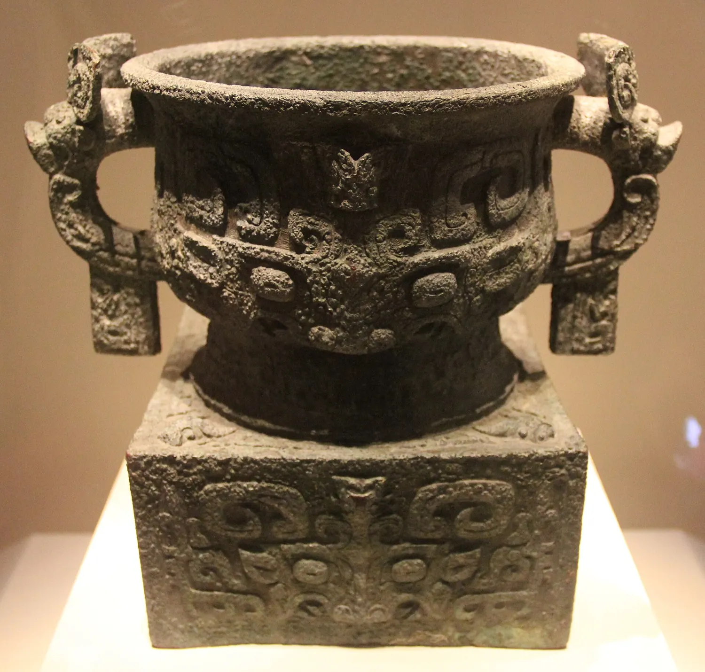
The Li gui, early Western Zhou, found at Lintong, Shaanxi, in 1976. Its inscription records King Wu’s conquest of the Shang. National Museum of China. Photo: Gary Todd, CC0, Wikimedia Commons.
The Zhou. A frontier state to the west shared most Shang material culture.
1045 BCE. The Zhou rose against the Shang and defeated it.
Bronze remembers. A Zhou bronze dates the victory to a day in the sixty-day cycle.
The big idea. The Zhou justified it with the Mandate of Heaven.
Today's lecture ends here. Continue on your own: the stories below finish this chapter's history, and one of them ends with a review question to answer.
"A little learning is a dang'rous thing; Drink deep, or taste not the Pierian spring."Alexander Pope, An Essay on Criticism, 1711
Independent study · Q9 story · What crossed the steppe
Chariots, Horses and Wheat Reached China from the West
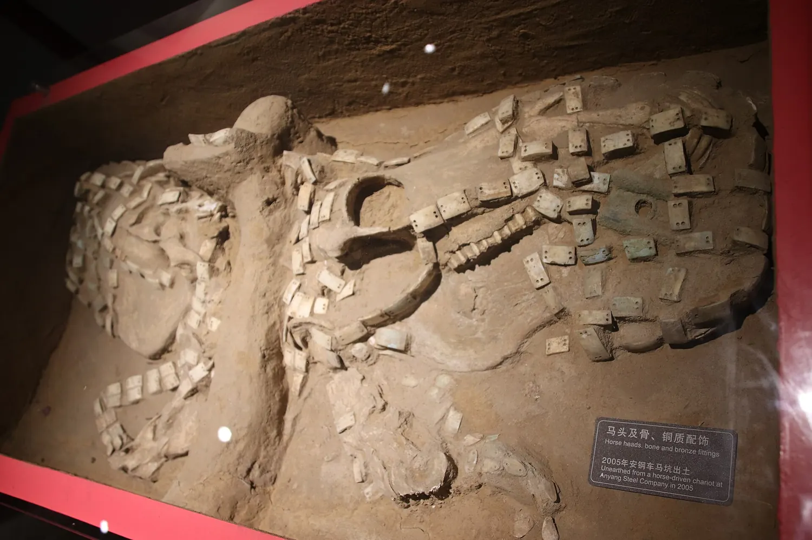
Shang chariot and horse heads with bone and bronze fittings, On-Site Museum, Yin Ruins, Anyang. Photo: Gary Todd, CC0, Wikimedia Commons.
Chariots. No wheels or animal traction before them, so they came by diffusion.
When. Spoke-wheeled chariots came into use around 1200 BCE.
Horses. Domesticated horses also reached China from farther west.
Wheat. Wheat spread from West Asia and became a common Shang crop.
Both ways? Your textbook reports Shang silk in Egypt; specialists dispute it.
×
Diffusion
Diffusion is the spread of an idea, technology or crop from one people to another, often step by step through neighbors, rather than by one group inventing it independently.
Although early Chinese civilization developed largely independently, what important technologies and crops were introduced through diffusion from other parts of Eurasia?
Patricia Buckley Ebrey, A History of China, Chapter 1, “China in the Bronze Age: The Shang and Western Zhou Dynasties (ca. 1500–771 BCE),” pp. 10–15 and 18–19.
Beyond the textbook
Houmuwu ding: National Museum of China object record (weight 832.84 kg); People’s Daily, “Found and hidden: Legend of China’s buried treasure” (2015), for the 1939 discovery.
Li Song, Chinese Bronze Ware (Cambridge University Press, 2011), on the Houmuwu ding and Fu Jing.
Sichuan Provincial Institute of Cultural Relics and Archaeology et al., “New discoveries at the Sanxingdui Bronze Age site,” Antiquity (2022); radiocarbon results announced June 2022.
Further reading
David N. Keightley, Sources of Shang History (University of California Press, 1978).
William G. Boltz, The Origin and Early Development of the Chinese Writing System (American Oriental Society, 1994).
Robert Bagley, “Shang Archaeology,” in The Cambridge History of Ancient China (1999).
Sarah Allan, The Shape of the Turtle (SUNY Press, 1991).
Li Feng, Early China: A Social and Cultural History (Cambridge University Press, 2013).
The full scholarly bibliography is in the background essay.
Images
Real images: The Metropolitan Museum of Art; photographs by Gary Lee Todd (CC0), Furius (CC0), Vassil (CC0), Huangdan2060 (CC0), Kanguole (CC0), Windmemories, Cangminzho, Siyuwj, Zhangzhugang, Ismoon and Mlogic (CC BY-SA), Xuan Che and momo (CC BY 2.0); 1948 news photograph (public domain); course-made maps and chart on Uwe Dedering’s base map (CC BY-SA 3.0). Full credits sit in each caption.
Corrections shown beside the textbook: Houmuwu ding about 830 kg (museum record; textbook 875 kg); Shang fall 1045 BCE (textbook; some books give 1046); Shang silk in Egypt (textbook) is disputed by specialists.
One image is AI-generated: the Act III divider (slide V), carried over from an earlier version of this lecture. It is an interpretation, not a historical source.